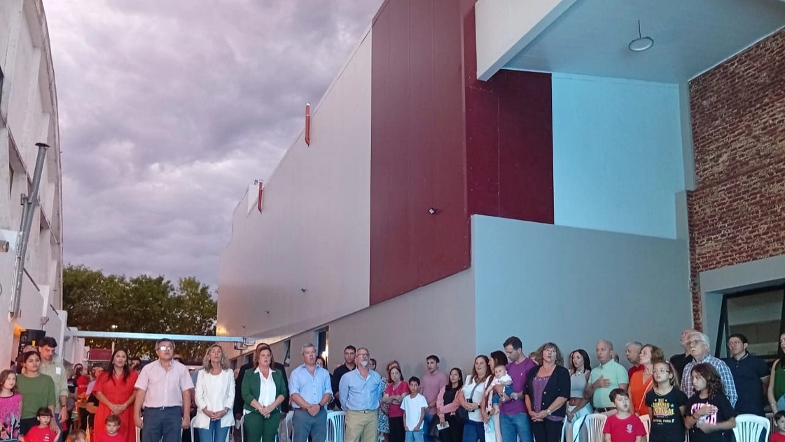
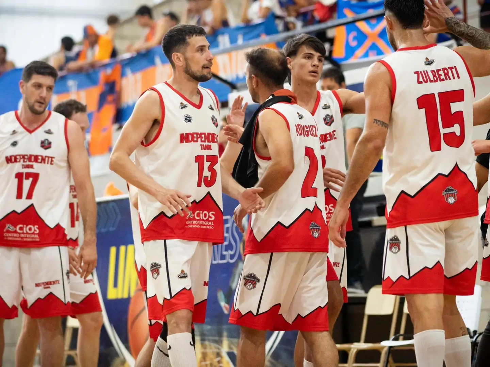
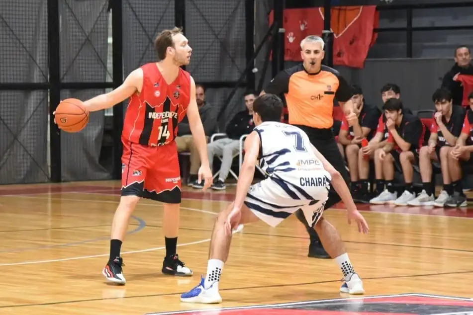

El Club Sportivo Independiente es una asociación civil deportiva sin fines de lucro, fundada el 20 de agosto de 1920 por el maestro Roberto Petit de Meurville.
El docente, oriundo de San Luis, junto a sus alumnos de la escuela Nº 66 de General Pico (La Pampa), maduraron la idea de construir una institución deportiva que complementara la labor en el aula, alejando a los jóvenes del vicio y procurando cuerpos sanos para mentes sanas, cuenta la historia.
La primera Secretaría de Independiente funcionó en una habitación del hotel “El Gas”, y los primeros entrenamientos de fútbol, tenis y atletismo de los coloraditos se realizaron en la calle 21, sobre las vías del ferrocarril. Luego, se compraron las 5 hectáreas sobre la Avenida San Martín, en donde actualmente funciona la Administración del Rojo de La Pampa.

BASQUET

HOCKEY

FUTBOL

VOLEY

TENIS

RUNNING

El Club Sportivo Independiente de General Pico inauguró esta tarde la planta baja del Instituto Roberto Petit de Meurville, el colegio primario de la ciudad que fue construido en la esquina de la calle 1 y la Avenida San Martín. Del acto inaugural participaron la vicegobernadora de la provincia, Alicia Mayoral; los ministros Diego Álvarez (Desarrollo Social) y Marcela Feuerschvenger (Educación) y la intendenta de General Pico; Fernanda Alonso; junto a demás autoridades locales y provinciales.

Independiente transita los últimos momentos antes de lo que será su debut en la Liga Federal de Básquetbol, que se pondrá en marcha mañana. El rojinegro competirá en la Conferencia Sudeste, y tendrá un exigente comienzo, ya que se medirá en 48 horas con los dos representantes de Gral. Pico, Ferro Carril Oeste (mañana) e Independiente (el domingo).

Independiente afrontará este jueves el comienzo de su recorrido en los playoff de la Liga Federal 2026.
Desde las 21.30 en su polideportivo Duggan Martignoni será local de Racing de Olavarría, en el inicio de la serie eliminatoria al mejor de tres juegos que tendrá continuidad en esa localidad.
| Pos | Club | PT | PJ | PG | PE | PP | DF |
|---|---|---|---|---|---|---|---|
| 2 |  Club Sportivo Independiente Club Sportivo Independiente |
37 | 22 | 10 | 7 | 5 | 10 |
| 5 |  Pico Football Club Pico Football Club |
32 | 22 | 9 | 5 | 8 | 0 |
| 7 |  Club Atlético Costa Brava Club Atlético Costa Brava |
27 | 22 | 7 | 6 | 9 | 2 |
| 8 |  Ferro Carril Oeste Ferro Carril Oeste |
27 | 22 | 6 | 9 | 7 | -5 |
| 10 |  Club Social y Atlético Ferro Carril Oeste Club Social y Atlético Ferro Carril Oeste |
24 | 22 | 6 | 6 | 10 | -4 |
| 11 |  Club Atlético Ferro Carril Oeste Club Atlético Ferro Carril Oeste |
20 | 22 | 4 | 8 | 10 | -15 |